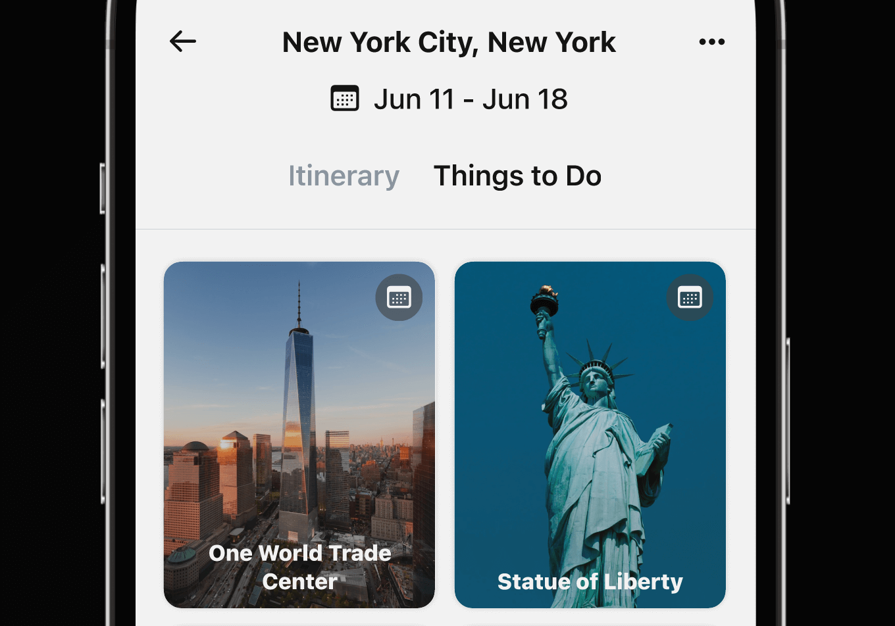
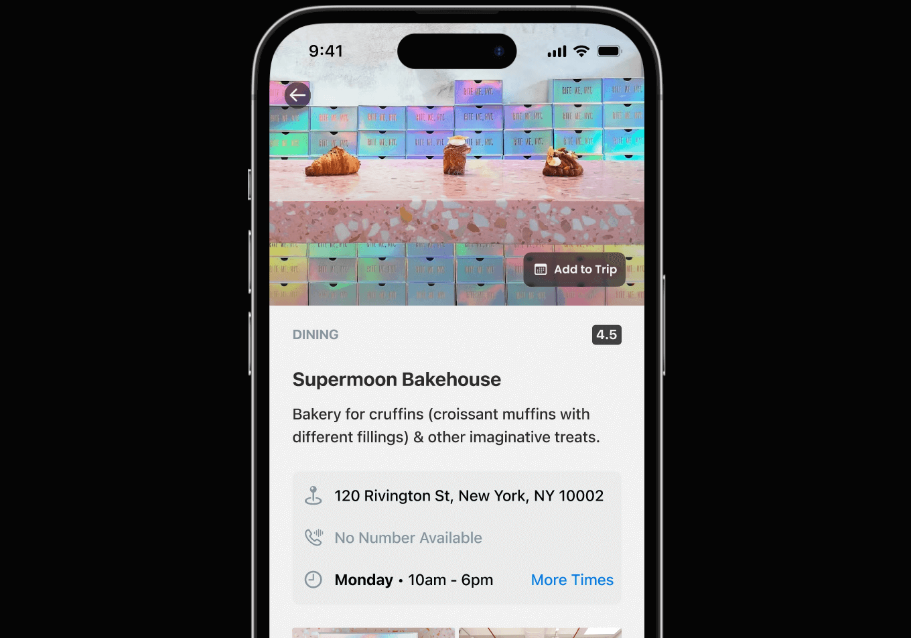
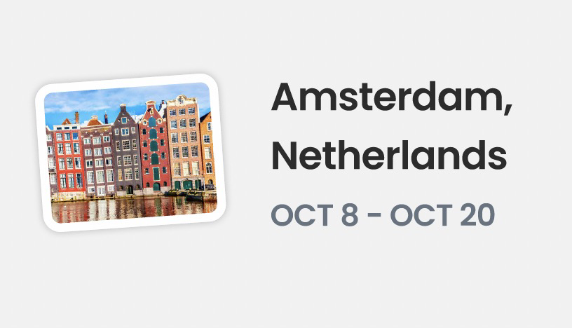
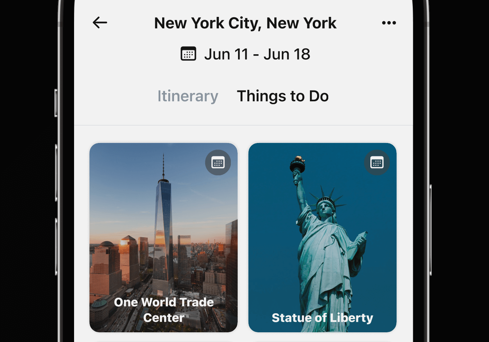
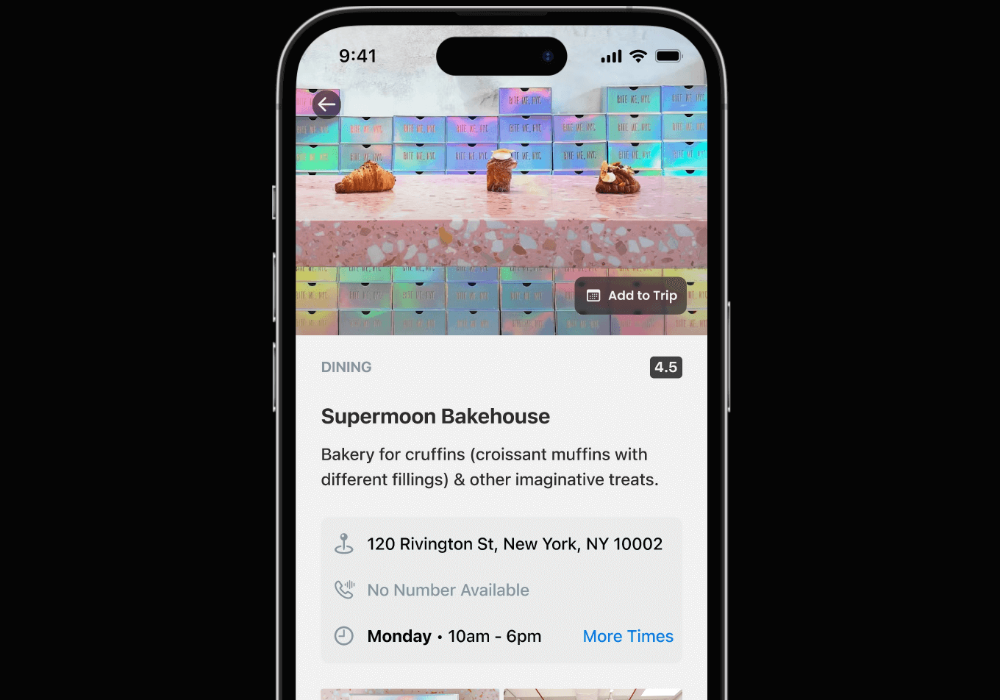
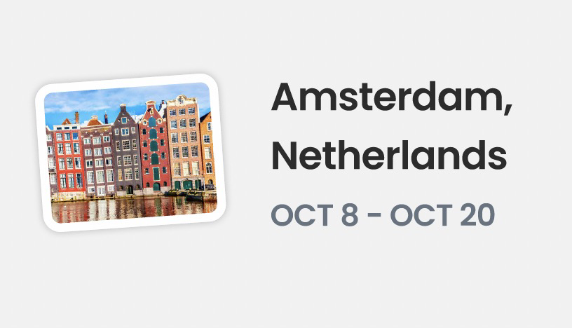
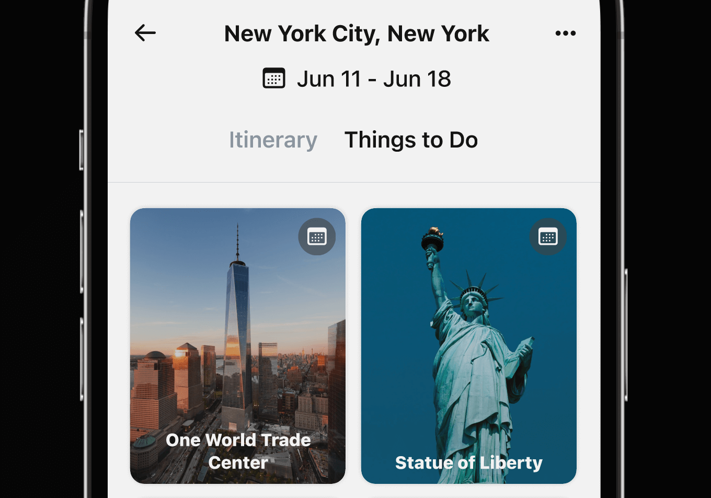
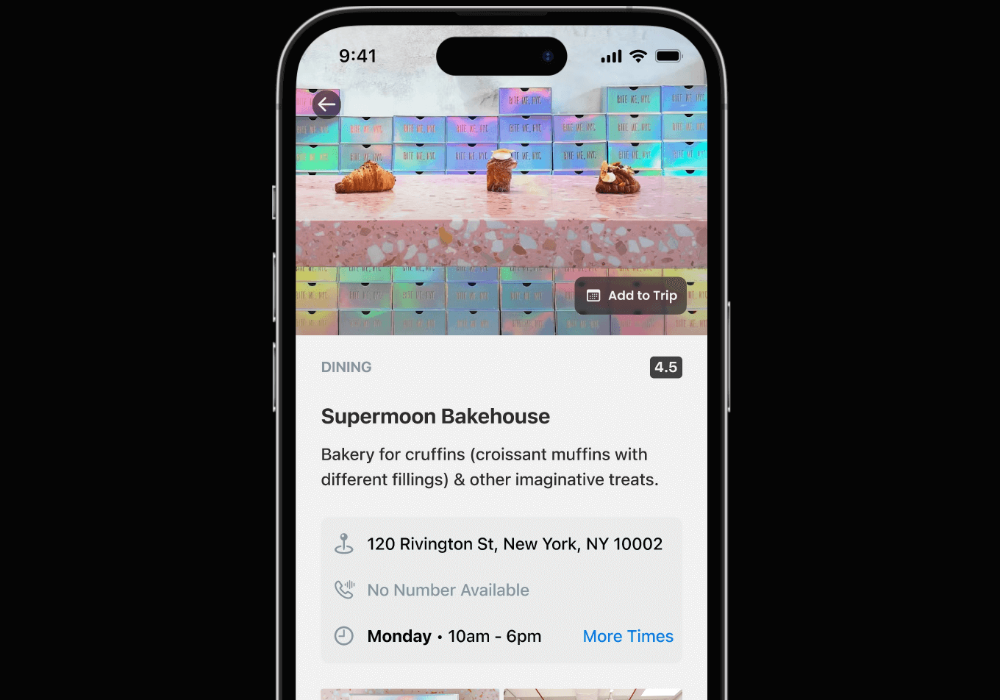
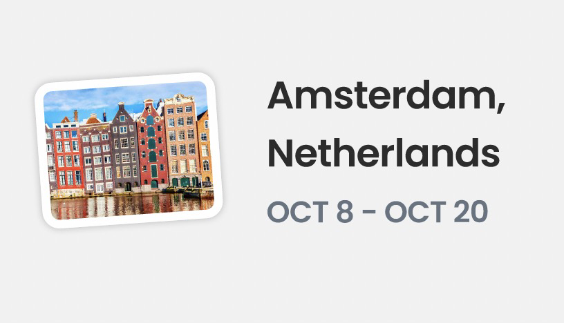

Chronacle
Since Summer 2021
A trip planning app born from my desire for a more engaging experience organizing my future trips around the world.

 





Software Designer and Developer
34.0549° N, 118.2426° W (Los Angeles, CA)
Since Summer 2021
A trip planning app born from my desire for a more engaging experience organizing my future trips around the world.



Summer 2023
As a Design Intern at Snap Inc., I crafted a potential partnership with LA Metro that included a Snapchat feature aimed at incentivizing public transit usage.

Summer 2023
As a Design Intern at Snap Inc., I helped imagine a Snapchat feature addressing the unique challenges faced by underprivileged teens and young adults in their academic journeys.
Since Fall 2023
A mess-free recipe finding app.
I'm a software designer and developer in Los Angeles, California. My focus is on visual and interaction design for web applications and native mobile apps.